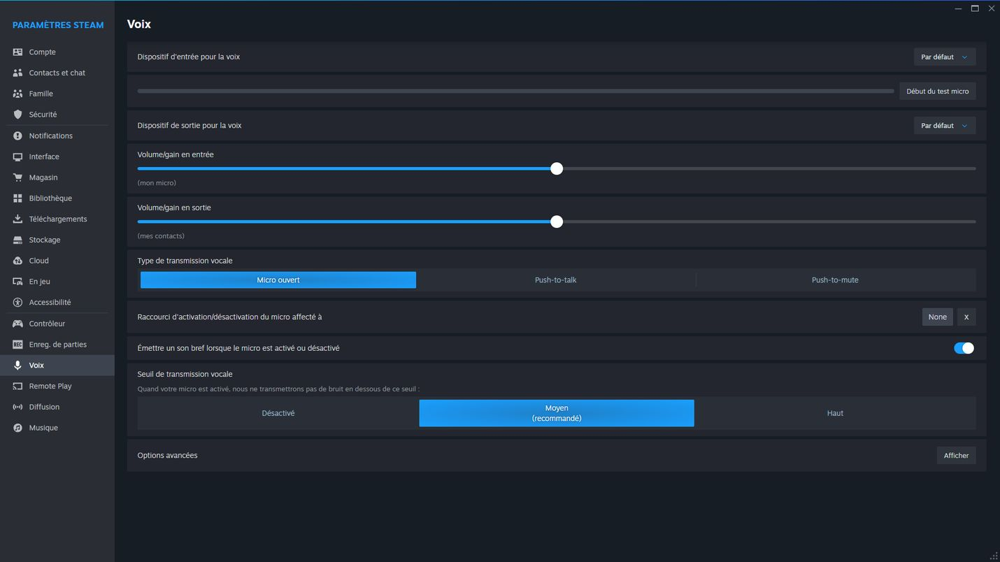

La demande. Playtest du 28/11 : Hat Kid tenait V, la bouche de son chat ne bougeait pas. Les journaux montrent que le micro s'est bien ouvert trois fois (9 s, 0,3 s, 3 s) mais que Steam n'a rendu aucun son (0 paquet) : personne ne l'entendait non plus. Ton compte Steam Hat Kid est réglé sur un micro précis, pas sur « Par défaut ». D'où ta demande : dans les options, changer de micro et surtout le tester, s'entendre.
Aujourd'hui. Échap › Options (et les mêmes Options au menu principal) : Principal, Musique, Effets, Voix, Micro ‹ Maintenir V ›, Langue, Essais. Le jeu ne choisit pas le micro : c'est Steam qui écoute, avec le micro de ses propres réglages, et rien ne dit au joueur que Steam n'entend rien.
Référence. Steam, Paramètres › Voix (ouvert sur ce PC aujourd'hui, ci-dessous) : une liste « Dispositif d'entrée », un bouton « Début du test micro » qui renvoie ta voix en direct avec une jauge, et un seuil sous lequel rien n'est envoyé. Discord, Voix et vidéo : liste « Périphérique d'entrée », bouton « Vérifions » qui te fait t'entendre en direct, jauge de sensibilité. Lethal Company : la liste des micros est dans ses propres options, à côté du mode « appuyer pour parler ».

La scène. Hat Kid, avant la partie du 28/11, ouvre Échap › Options. Sur son PC il y a 4 micros (leurs vrais noms) : son casque Plantronics, le réseau de micros du portable (muet capot fermé), le micro virtuel d'AudioRelay et celui du streaming Steam.
Sans question. Le choix est gardé sur ce PC. Un micro débranché : le jeu reprend celui par défaut. Ce que tu entends au test est passé par le même chemin que ta voix en partie (compression, mise à niveau) : c'est ce que les autres entendront. « Aucun son de ce micro » s'affiche dès qu'un micro ne rend rien pendant 2 s, même sans parler (un micro branché rend toujours un léger souffle). Les micros du PC sont écoutés par FMOD (déjà le moteur de son du jeu) et compressés en Opus. Sur Mac, le jeu demande l'accès au micro la première fois.
Clique sur la ligne « Entrée » pour changer. Ce choix décide aussi du dessin de la section 2.
Pas de choix : Steam écoute le micro de ses propres réglages.
Un clic passe au suivant. Le jeu écoute lui-même : Steam ne sert plus qu'au transport, et le vocal marche aussi dans la build Relay. On perd l'anti-écho de Steam : avec des enceintes, les autres peuvent s'entendre en retour.
Comme C1, mais on voit tous les micros d'un coup et on prend le bon, sans les faire défiler.
Le jeu ne choisit rien : « Changer dans Steam » ouvre Steam directement sur sa page Voix, par-dessus le jeu. On garde l'anti-écho et le seuil de Steam, mais on sort du jeu pour régler.
Par défaut rien ne change (Steam, son anti-écho, ce qui marchait chez Wouh et Flox) ; celui dont Steam écoute le mauvais micro prend le bon dans la liste, sans sortir du jeu.
Ces cadres jouent la même scène : Hat Kid parle dans son casque, puis passe sur le micro du portable, capot fermé. Le cadre bleu en pointillés n'est pas dans le jeu : il dit ce que tu entends. « Avec ton vrai micro » : la page t'écoute pour de vrai (ton navigateur te demande l'accès) et tu peux cliquer.
Tant que les options sont ouvertes, la ligne « Niveau » suit ta voix. On voit, on ne s'entend pas.
Comme Steam et Discord : tant que le test tourne, ta voix revient dans ton casque avec la jauge. Avec des enceintes, ça peut siffler (larsen).
Tu parles 4 s, le jeu te les rejoue aussitôt. Pas de larsen, même avec des enceintes ; on s'entend avec un petit décalage, comme les autres.